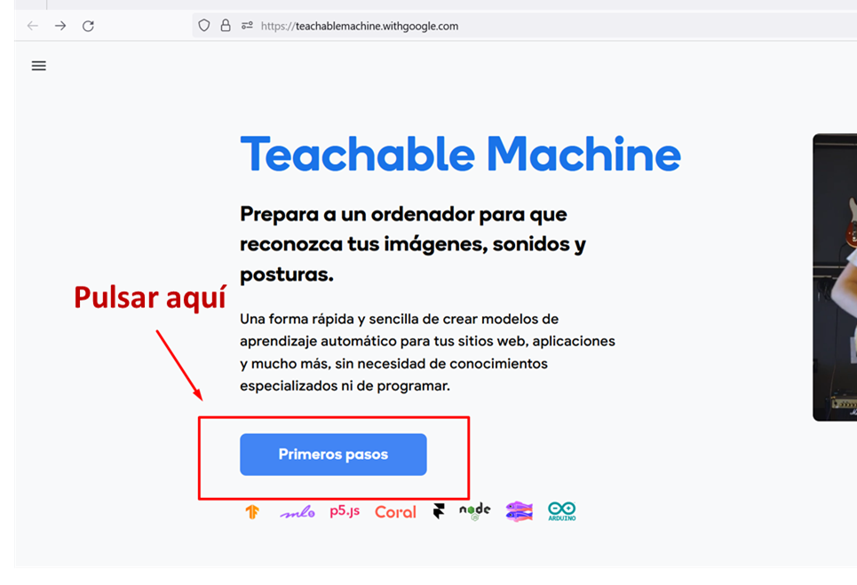
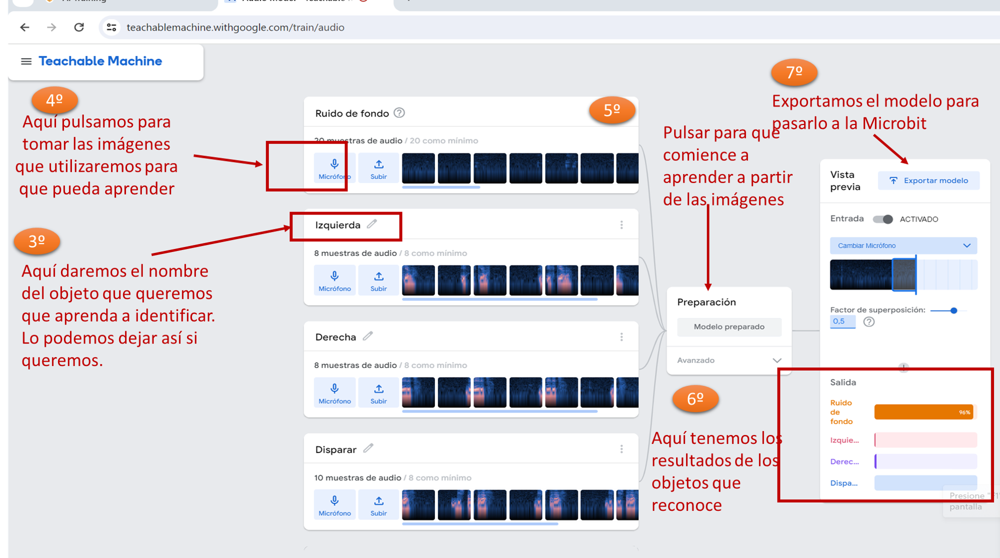
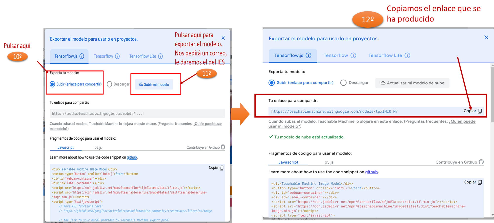
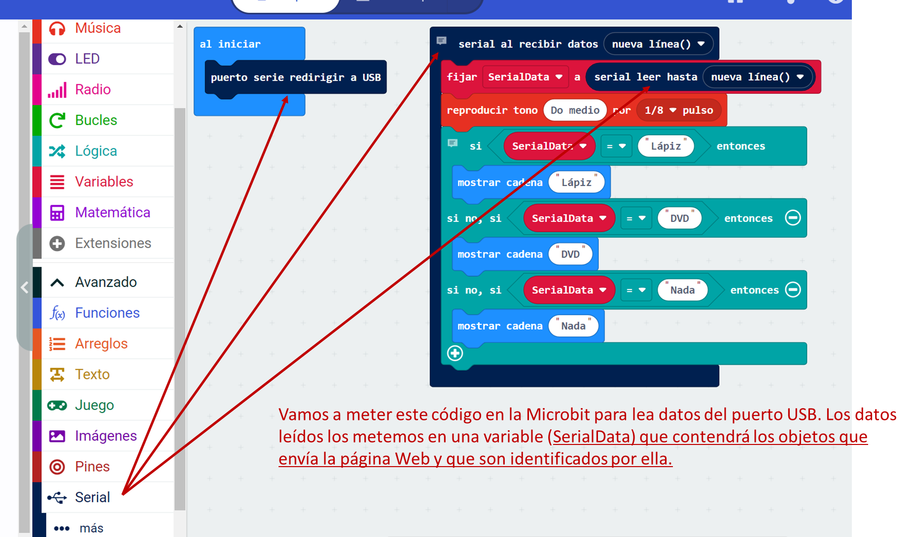
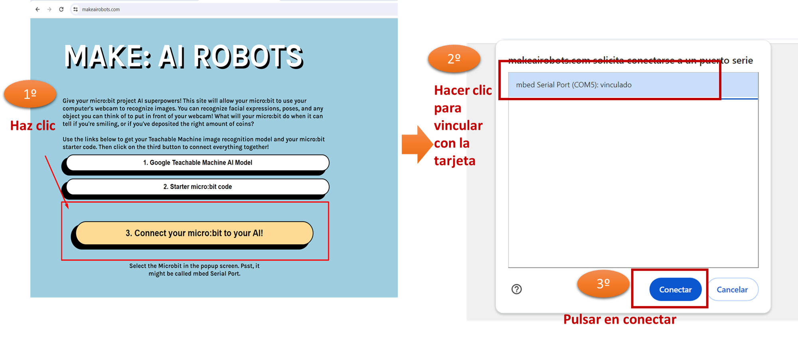
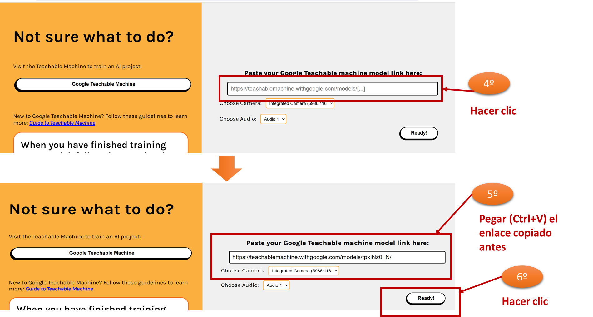
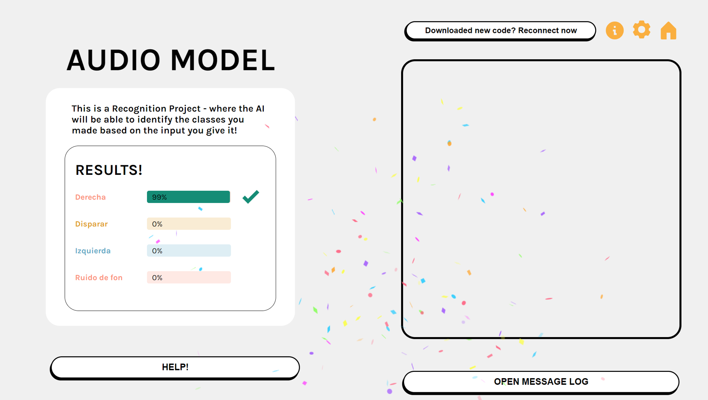

Mediante aprendizaje supervisado, vamos hacer que nuestro Robot reconocerá dos o tres palabras (por ejemplo izquierda, derecha o disparo) y como consecuencia realizará movimientos en base a a esas palabras que hemos pronunciado.
¿Qué necesitamos?
- 2 tarjetas Microbit conectada al portátil
- Utilizando el navegador Chrome acceder a la página "https://makeairobots.com/"
- 1 Keyestudio Shield.
- Editor de MakeCode o de Python (si no estas regístrate con el correo del instituto para que el proyecto se te guarde y lo tengas disponible).
- En makecode necesitas la extensión Servo.
- 2 Motores paso a paso.
¿Cómo lo hacemos?
1º. Lo primero que haremos es hacer que nuestro sistema aprenda a reconocer las palabras. Para ello, establecemos 3 palabras que queremos que nuestro sistema reconozca. A continuación, accede a la página Web https://teachablemachine.withgoogle.com/ y seguimos los siguientes pasos:
1.1. Acceder a Google Teachable Machine AI Model

1.2 Le pasamos los sonidos para que pueda aprender y exportamos.

1.4 En la exportación, lo alojaremos en nuestro drive para

3º.Metemos los programas en las tarjetas:
- En una de las tarjetas microbit, la que está conectada a los motores de marcar goles, metemos el código de la tarea "Act.01.06. Robot que marca goles".
- En la otra tarjeta Microbit: Metemos este programa en la Microbit para que lea los datos que se le envía desde la página web. Para ello:
- Accedemos a la página MakeCode y nos autentificamos en ella (a través de "sign in")
- Creamos un proyecto con el nombre "TR.02.01"
- Incorporamos al proyecto el siguiente código para que lea los datos que la página Web envía al puerto USB

4º Conectar con la tarjeta y vincularla a la página.
4.1 Para ello pulsar en "Connect your micro:bit to your AI!" en la página web "https://makeairobots.com/"

2.2 Vincular con la página Google "Teachable Machine"

2.3 El sistema empieza a reconocer las palabras y a comunicárselo a la Microbit.

4. Modifica el código anterior del punto "1" para que tengan en consideración las palabras que pronunciamos; de tal manera que cuando digamos:
Derecha, el Robot de la práctica anterior gire a la derecha;
Izquierda, gire a la izquierda.
Dispara, patee la pelota.